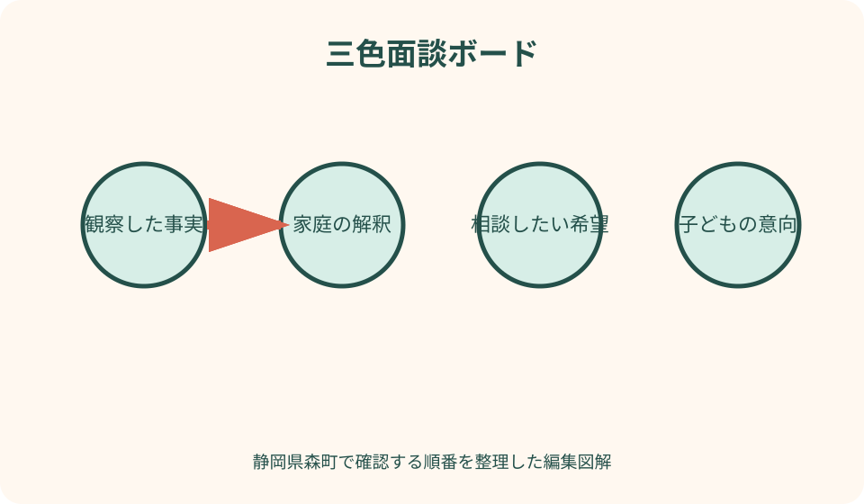
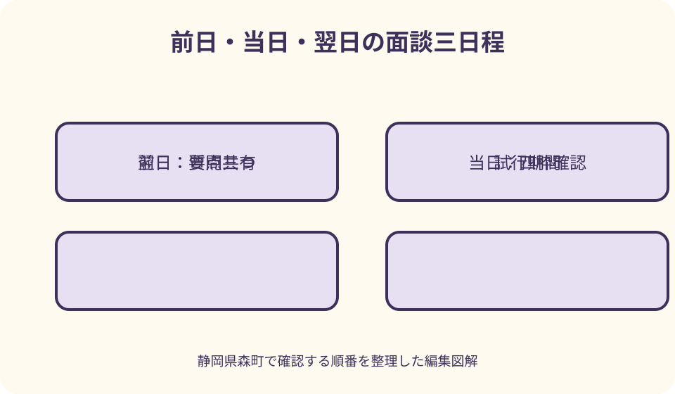

学校・就学・家庭記録｜最終確認 2026-08-10
静岡県森町の学校面談を準備｜事実・希望・子どもの意向を整理
学校面談で話がかみ合わない原因の一つは、見聞きした事実、そこから家庭が考えた解釈、学校へ希望することが一文に混ざることです。面談前に時系列を作り、子どもの言葉を保護者の意見と分け、持参資料を絞ると、限られた時間でも次の行動を決めやすくなります。森町の学校窓口と公的な相談情報を確認しながら、面談前・当日・面談後の記録方法をまとめます。

編集イラスト結論：事実・解釈・希望を三色に分ける
青は、日時、場所、本人の言葉、出欠、提出物など確認できる事実です。黄色は、その事実を家庭がどう受け止めたかという解釈、緑は学校へ相談したい希望にします。
例えば「月曜の朝に腹痛を訴え、二週続けて遅刻した」は事実、「教室が不安なのでは」は解釈、「朝の様子を担任と共有したい」は希望です。一文に詰め込みません。
三色を分けると、保護者の感じ方を否定せず、学校側が確認できる事項も明確になります。面談を勝ち負けや学校評価の場にしないための基本です。
記事は面談結果、支援、問題解決を保証しません。学校と家庭が次に確かめることを合意し、子どもの様子に応じて見直せる記録を作ることを目標にします。
森町の正式な学校窓口を確認する
森町公式の小中学校一覧には、町内の学校名、所在地、電話番号、各校ホームページへの入口が載っています。検索結果や個人の連絡先ではなく、在籍校の正式窓口を使います。
学校教育課の連絡先も控えます。最初から学校を飛ばして教育委員会へ結論を求めるのではなく、相談内容と緊急性に応じて、どの順で話すかを確認します。
登校が難しい児童生徒について、森町は教育支援センター「わかば」の相談、見学、体験などを案内しています。利用を記事から決めず、本人の状況と相談手順を公式窓口へ尋ねます。
面談予約では、子どもの氏名、学年、相談テーマ、希望時間、参加者を簡潔に伝えます。電話口で詳細な個人情報をすべて説明する前に、学校が指定する共有方法を確認します。
面談の目的を一文で決める
目的は「全部話す」ではなく、「朝の登校困難について学校での様子を確認し、二週間試す支援を一つ決める」のように、対象、確認、次の行動を含めます。
議題が複数ある場合は、優先一件、時間があれば二件目、別日に回す事項に分けます。限られた面談時間へ長い履歴をすべて入れません。
保護者二人が参加するなら、同じ目的に合意しているか事前に確認します。面談中に初めて家族内の異なる希望が出る場合も、違いを隠さず別々に伝えます。
子どもにも、誰と何を話すのか、面談後に何を伝えるのか説明します。本人の知らないところで結論だけが決まる印象を与えないようにします。
時系列は出来事と連絡を一つの線にする
左端に日付、次に学校で起きたこと、家庭での様子、学校・家庭の連絡、試した対応、その後を並べます。記憶だけで順番を説明する負担を減らします。
時刻が不明な場合は推測して埋めず、「午前中」「本人の話では」など情報の確かさを添えます。誰から聞いた内容かも明記します。
繰り返す事象は毎回同じ表現を複写せず、頻度、共通条件、異なる条件をまとめます。特に起きなかった日も比較材料になります。
長期間の経過は一枚の概要と、必要な詳細資料に分けます。面談の冒頭で概要を共有し、学校が確認したい日の詳細だけ開きます。
事実欄は観察できる言葉へ直す
「やる気がない」は解釈を含みます。「宿題を始めるまで三十分座り、声掛け三回後に一問目へ着手した」のように、行動と時間へ置き換えます。
「先生に怒られた」は、子どもの大切な訴えですが、状況の全体が未確認なら「本人が『怒られた』と話した」と出所を添えます。本人の言葉を否定も断定もしません。
成績や出欠は、通知や学校記録を持参できるなら日付と資料名を付けます。家族の記憶と公式記録に差があれば、面談で照合する質問にします。
写真、メッセージ、作品などを持参する場合は、他の子どもの個人情報を不用意に含めません。原本を提出するのか、面談で見せるだけかを決めます。
解釈欄には根拠と別の可能性を置く
家庭の解釈は消す必要がありません。「月曜だけ多いので週初めの変更が負担かもしれない」と、どの事実から考えたかを書きます。
同時に、睡眠、体調、課題、人間関係など別の可能性を一つ置きます。保護者自身が診断や相手の意図を確定しない姿勢が、質問の幅を保ちます。
学校側の説明も、その場で唯一の事実として受け取るのではなく、学校での観察、担当者の見立て、確認中の事項に分けて記録します。
家庭と学校で解釈が異なるときは、どちらが正しいか即決せず、共通して観察する項目と期間を決めます。次回面談で比較できる形にします。
希望は要望の理由と試す期間を書く
「席を変えてほしい」なら、何に困り、どの状態を目指すのかを添えます。席替え自体が目的にならず、学校側が別の方法も検討できます。
希望は、必ず実施してほしい事項、相談したい案、情報だけ知りたい事項に分けます。一覧をすべて同じ強さで求めません。
支援を試す場合は、開始日、観察項目、家庭と学校の担当、見直し日を置きます。「しばらく様子を見る」を期限なしの結論にしません。
学校がすぐに回答できないときは、校内で確認する人、回答予定日、暫定的な対応を尋ねます。検討中を拒否と同義に扱いません。

子どもの意向は保護者の希望と別紙にする
本人へ、困っていること、変えたいこと、変えたくないこと、大人へ知ってほしいことを聞きます。質問を誘導せず、「分からない」という答えも残します。
学校へ伝えてよい範囲を本人と確認します。ただし生命・身体に関わる緊急性や安全上の問題がある場合の共有は、本人へ理由を説明し、適切な大人へ相談します。
本人が面談へ参加するかは、年齢、負担、話題、本人の希望を踏まえて学校と相談します。参加しない場合も、本人の言葉を保護者が勝手に言い換えないよう引用欄を作ります。
言葉で答えにくい場合は、絵、選択肢、表情、場面ごとの評価など方法を変えます。大人が観察した反応は「本人の意向」と断定せず、観察として記します。
持参資料は五点以内に絞る
基本は、一ページの要約、時系列、学校からの関連文書、家庭の観察、質問一覧です。診療・支援の書類が必要なら学校が求める様式と共有範囲を確認します。
大量のメッセージ履歴は、議題に関係する日付へ絞ります。全文を印刷して読んでもらう前提にせず、原本の所在と要点を示します。
学校へ渡す資料には、表題、子どもの氏名、作成者、作成日、ページ番号を付けます。家庭用メモと提出用を分け、感情を書き出した下書きを誤提出しません。
返却が必要な原本はその場で伝え、写しを渡します。個人情報が含まれる資料を誰が受け取り、どこで保管するかを確認します。
参加者と役割を面談前に確認する
担任だけでよいか、養護教諭、特別支援教育担当、管理職などの参加が必要かを相談テーマに応じて学校へ尋ねます。家庭が参加者を一方的に指定しません。
家庭側も話す人、記録する人、子どもを見守る人を決めます。一人で参加する場合は、許可を得てメモを取り、重要事項を最後に読み合わせます。
通訳や支援者の同席を希望する場合は、目的、守秘、日程を事前に学校へ相談します。無断で第三者を連れて行き、その場で個人情報を共有しません。
オンライン面談なら、接続テスト、資料共有、録音の扱い、第三者に聞かれない場所を確認します。文部科学省も個人情報に配慮した準備の必要性を示しています。
面談当日は確認質問を先に置く
冒頭で目的と希望終了時刻を共有し、まず学校で確認できている事実を尋ねます。家庭の説明をすべて終えてから質問する形に固定しません。
質問は「学校ではどうですか」ではなく、「火曜一時間目の算数で、課題開始と席を離れる回数を確認できますか」のように場面を指定します。
専門用語や校内の仕組みが分からなければ、言い換えと具体例を求めます。理解したふりで進めず、家庭の言葉で復唱します。
感情が強くなった場合は、休憩や別日を提案できます。感情があることを失敗とせず、事実確認と安全な話し合いを続けられる条件を整えます。
決定・検討中・担当・期限を四枠で記録する
決定枠には、誰が、いつから、何をするかを書きます。「配慮する」「注意する」のように確認方法がない言葉だけを残しません。
検討中枠には、何を誰が確認し、いつ回答するかを入れます。回答が難しい事項も、次に説明を受ける日が分かれば放置を防げます。
学校担当と家庭担当を別の列にし、同じ行へ二人の名前を曖昧に書きません。子ども本人へ担ってもらう行動は、本人の理解と負担を確認します。
期限は開始日、提出日、見直し日を区別します。面談日をすべての起点にせず、学校行事や受診予定との前後を確認します。
面談後は二十四時間以内に要点を整える
帰宅後、家族の記憶が新しいうちに、決定、未決定、担当、期限、次回日を一ページへ転記します。発言録を完全再現することより行動を正確にします。
学校へ確認文を送る場合は、「本日の理解は次のとおりです」と簡潔にまとめ、違いがあれば知らせてほしい旨を添えます。合意していない内容を決定として通知しません。
子どもには、話した内容のうち本人に関係する決定と次の確認日を、年齢に合う言葉で説明します。大人の評価や相手への批判をそのまま聞かせません。
提出資料、学校から受け取った物、家族メモを同じフォルダーへ入れ、面談日を名称に付けます。次回は前回の合意から始められます。
試した支援は結果でなく条件を記録する
支援を始めたら、実施日、場面、本人の様子、学校の観察、家庭の観察を記します。一日うまくいったことだけで恒久的な効果と結論しません。
実施されなかった日は、誰かを責める記録ではなく、行事、担当不在、伝達漏れなど理由を確認します。仕組みを見直す情報になります。
本人に「よかったか」を尋ねるだけでなく、楽だったこと、困ったこと、続けたいことを聞きます。保護者の安心と本人の学びやすさを同じ尺度にしません。
見直し日には、続ける、変える、やめる、別の情報を集めるの四案を持ちます。最初の希望を守ること自体を目的にしません。

通常面談を待たない緊急相談を分ける
命や身体への差し迫った危険、深刻な体調変化、行方が分からないなどの状況では、予約面談の資料作りを先にしません。学校、救急、警察など状況に合う窓口へ直ちに連絡します。
いじめやその他の子どものSOSについて、文部科学省は二十四時間子供SOSダイヤルを案内しています。夜間・休日を含む相談先の一つとして、子どもと保護者が知っておけます。
子どもが自分を傷つけたい、消えたいなどと話した場合は、軽い表現と決めつけず一人にせず、緊急の専門窓口へ相談します。この記事は危機評価を行いません。
緊急連絡後、落ち着いてから日時、発言、対応、連絡先を記録します。記録を取るために通報や安全確保を遅らせないでください。
面談準備をする良い点
良い点は、子どもの出来事を感情から切り離すのではなく、感情と確認可能な事実を両方残せることです。家庭の心配を具体的な質問へ変えられます。
限られた時間に優先課題を扱い、資料の説明だけで面談が終わるのを避けられます。次に試すことと見直し日まで進みやすくなります。
子どもの意向を保護者の希望と別に記すため、本人の声が会話の途中で消えにくくなります。本人が参加しない面談でも引用して共有できます。
面談後の認識差にも気づきやすくなります。決定・検討中・担当・期限を確認することで、「言った」「聞いていない」の対立を減らせます。
学校面談の案内へ注文したい点
注文したい点は、森町公式の学校一覧や相談施設の情報はあっても、各校の面談予約、参加者、記録共有の標準的な流れは在籍者向け資料で確認する必要があることです。
相談内容によって担任、養護教諭、支援担当、管理職など窓口が変わるため、保護者には最初の一歩が分かりにくい場合があります。受付で目的別の案内があると助かります。
面談後の確認方法も、口頭、紙、配信など学校により異なります。重要な合意について、保護者が誤解を訂正できる方法が示されることが望まれます。
一方、保護者も長い主張だけを送るのではなく、事実、質問、希望、期限を分ける責任があります。学校だけへ記録負担を寄せず共同の確認にします。
代案・結論：一回で決めず短い確認を重ねる
長時間の面談が難しい場合は、資料を事前に渡し、十五分の事実確認、二週間の試行、短い見直しという複数回へ分けられるか相談します。
対面が難しい家庭は、電話、オンライン、書面など学校が対応可能な方法を尋ねます。個人情報の扱いと本人確認を学校の指示に合わせます。
話が平行線になった場合は、争点を事実、解釈、希望のどこにあるか分け、追加で必要な観察や説明を決めます。即座にどちらかが撤回する二択にしません。
結論として、良い面談は一回で完全解決する面談ではなく、本人の変化を共有し、次の行動と再確認日が決まる面談です。
大石の視点：転居前の学校面談は確認可能な条件から
住まい探しで学校への相談が必要でも、就学校や在籍が未確定の段階で個別対応を保証してもらうことは難しいものです。私は、まず学校教育課へ相談順を確認することを勧めます。
物件から学校までの距離、送迎時間、面談へ行ける時間帯は生活条件として測れます。一方、担任やクラスの将来の体制を不動産会社が約束することはできません。
学校の評判を聞くより、家庭が相談したい事実、必要な支援、通学・通院の制約を一枚にする方が、転居後の面談へ引き継げます。
前の学校での記録は、新しい学校への決定事項ではなく参考資料です。本人の現在の様子と新しい環境を確認し、支援を改めて話し合います。
記事固有の三色面談ボード
ボード上段を青の事実、黄色の解釈、緑の希望に分けます。各付箋へ日付と情報源を付け、関連する三色を縦に並べます。
中央に子どもの意向専用欄を置き、保護者の希望と交ぜません。本人へ確認した方法と、学校へ共有してよい範囲も記します。
下段は決定、検討中、学校担当、家庭担当、期限の五枠です。面談中に上段の話題を下段へ移し、行動へ変換します。
裏面には時系列と資料番号を付けます。長い出来事を表面へ詰め込まず、必要な日だけ元資料へ戻れる構造にします。
面談前日・当日・翌日の三日程
前日は目的一文、質問三つ、資料五点、子どもの意向を確認します。新しい問題を深夜まで追加せず、別議題として記録します。
当日は開始時に目的、終了前に決定・担当・期限を読み合わせます。分からない用語と未回答を印で残し、その場で無理に解釈しません。
翌日は要点を整え、必要なら学校へ理解確認を送り、子どもへ関係事項を説明します。提出物と次回日をカレンダーへ登録します。
三日程の最後に、自分の休息も予定へ入れます。面談の緊張や結果を一人で抱えず、必要なら公的相談窓口へつなぎます。
まとめ：面談を次の観察と再確認へつなぐ
静岡県森町の学校面談は、正式な学校窓口へ予約し、目的を一文にして、事実、家庭の解釈、希望を三列に分けて準備します。
時系列、子どもの意向、資料、質問を絞り、当日は決定、検討中、学校担当、家庭担当、期限を読み合わせます。
面談後は二十四時間以内に要点を整理し、支援を試す期間と見直し日を置きます。一回の話合いで結論を固定しません。
差し迫った安全や健康の問題は通常面談を待たず、学校、救急、警察、二十四時間子供SOSダイヤルなど状況に合う窓口へ連絡してください。
公式情報・確認先
掲載内容は次の一次情報を基礎に整理しました。営業、料金、催し、交通は変わるため、出発前または手続き前にリンク先で最新情報を確認してください。
- 小学校・中学校（静岡県森町、2026-08-10確認）
- 学校教育課（静岡県森町、2026-08-10確認）
- 森町教育支援センター わかば（静岡県森町、2026-08-10確認）
- 24時間子供SOSダイヤルについて（文部科学省、2026-08-10確認）
- 児童生徒の自殺予防に係る取組について（文部科学省、2026-08-10確認）
- 個人面談のオンライン化（文部科学省、2026-08-10確認）
- 学校における保護者等の対応に関する手引（静岡県教育委員会・文部科学省掲載資料、2026-08-10確認）